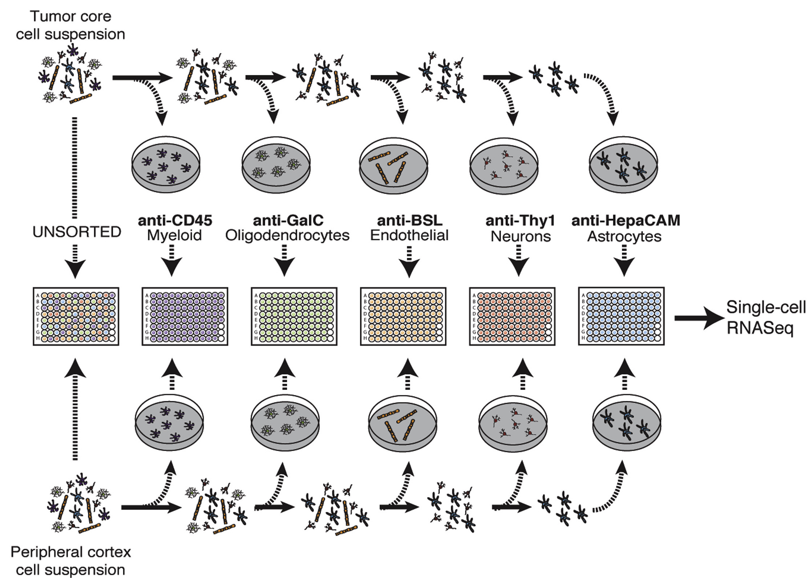

This exercise was adapted from the Alex's Lemonade Stand training module under a Creative Commons Attribution license.
Our objective for this exercise is to investigate the expression of marker genes across cell types. Here we consider marker genes to be genes considered by the field to be classic indicators of cell type.
These marker genes are the ones often used for FAC sorting, which is what was done in Darmanis et al. Cell Reports. 2017..
Here's a figure from their paper to give you a very brief overview of their FAC sorting methodology.

For more details on the methods, see their manuscript. But, in short, this study splits cells from a glioblastoma tumor by their cell-type based on their FAC sorting.
The authors identified neoplastic cells using multiple analyses, including a high level of SOX9 expression. The neoplastic cells make up the vast majority of the tumor core. So by seeing what marker genes they express, we may get an initial, gene-by-gene idea of how these cells behave.
The end result of this exercise will be a heatmap to compare the mean expression of the marker genes by cell type. We will also visualize the marker gene expression in reduced dimensions by creating a principal components scatterplot that color codes each cell by the expression level of a marker gene.
The preprocessing exercise includes filtering and normalizing the raw expression matrix; the analysis exercise starts from a pre-processed expression matrix. You can do either or both of these exercises.
import scanpy as sc
adata = sc.read('../data/glioblastoma_raw.h5ad')
Practice filtering based on quality control metrics. You can refer back to the Quality control notebook for useful code snippets.
Your workflow should consist of:
Compare your results to your neighbor's, and discuss why you made the choices you did.
Practice normalizing this dataset. You can refer back to the Normalization notebook for useful code snippets.
Your workflow should consist of:
adata.obs['plate_id'])Compare your results to your neighbor's, and discuss why you made the choices you did.
adata = sc.read('../data/glioblastoma_normalized.h5ad')
For this exercise, we want to analyze specific genes and their expression among the cell types in our dataset. We have already added SOX9 and CD45 as marker genes to investigate as controls, due to their use in the methods for FAC sorting. MOG has been added as a different type of control: a gene that wasn't used for FACS, but is related to myelination, and thus the oligodendrocyte phenotype.
Add other genes you are interested in to the gene list we started for you below.
You can use GeneCard to get information about
your chosen gene. Then add your chosen gene to this data.frame in the same format we have started
for you by replacing our <FILL_IN_THE_BLANKS>.
Note: Here, you'll need to use Ensembl IDs. There are ways to convert these to other forms of gene IDs in a bulk fashion, but for this exercise, we will only need a few genes and we've already set some up for you.
# Make a dictionary that contains gene symbols and their associated Ensembl IDs
markers = {'Sox9': 'ENSG00000125398',
'Cd45': 'ENSG00000081237',
'Mog': 'ENSG00000204655',
# 'REPLACE_GENE_SYMBOL': 'REPLACE_ENSEMBL_GENE_ID'
}
Depending on the gene you chose, it may not be in our filtered matrix, so you
may need to try a few.
You can use an in operator to check if the gene you are looking for is in
our filtered gene matrix (Remember it has to be an Ensembl gene ID e.g.ENSG...,
and it needs to be in quotes).
Use the phrase below to find out if a gene you are interested in is in the filtered dataset:
print('ENSG00000125398' in adata.var.index)
Another way to examine the relationship of marker genes and cell types is to make a PCA plot, like we did previously, but color the scatterplot points according to one of the marker gene's expression.
Perform PCA on the normalized dataset using sc.tl.pca().
Use sc.pl.pca_scatter() to make a scatterplot of the PCA results, coloring cells
by the expression of a marker gene, of your choosing.
After you have successfully made this plot, repeat this for the other genes in your marker list. Make more code chunks as you need them.